Mudflow Modeling
Overview
Mudflows are among the most destructive natural hazards in mountainous and steep coastal environments. Following intense rainfall, large volumes of water, sediment, rock, and woody debris can rapidly mobilize within steep drainages and canyon channels, producing fast-moving flows capable of damaging infrastructure and threatening downstream communities. Post-fire conditions can significantly increase the hazard by reducing vegetation cover, creating hydrophobic soil conditions, and exposing previously stabilized soils to erosion and mudflow propagation.
This case study demonstrates a complete FLO-2D workflow for evaluating mudflow hazards within a steep coastal watershed. The project combines watershed hydrology, rainfall-runoff modeling, infiltration analysis, and FLO-2D mudflow routing to simulate the generation and downstream movement of sediment-laden flows. Model results are used to evaluate inundation extents, mudflow volumes and concentrations, flow depths, velocities, and potential hazard areas along the drainage corridor and developed downstream areas. These results are used to define hazard areas, facilitate mitigation design and basin design, and define safety corridors.
The workflow illustrates how a rainfall-driven watershed response can be converted into a mudflow hydrograph and routed through a detailed FLO-2D computational grid.
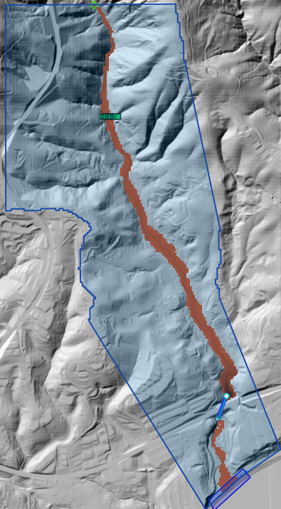
Project Objectives
The primary objectives of this study were to:
Delineate the contributing watershed.
Develop a rainfall-runoff model for a design storm event.
Estimate infiltration losses using globally available soil and land use data.
Generate a runoff hydrograph at the downstream canyon cross section.
Convert the flood hydrograph into a mudflow hydrograph.
Simulate downstream mudflow routing.
Evaluate potential inundation depths, velocities, and mudflow concentrations.
Study Area
The study area consists of a steep mountainous watershed near Malibu, California, that drains through a network of steep tributary channels into developed foothill areas along the canyon outlet. Numerous tributaries converge within the watershed, concentrating runoff, sediment, and debris during short-duration, high-intensity, post-fire storm events.
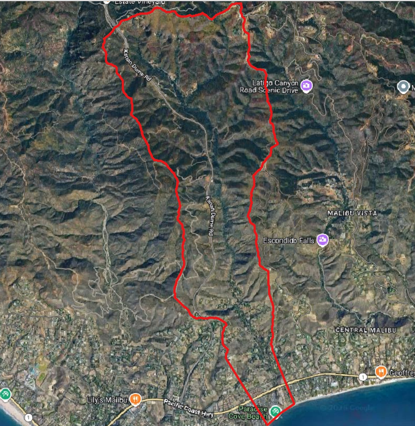
Figure 1. Watershed and foothills study area.
Data Sources
Several publicly available datasets were used during model development:
Digital elevation model (DEM)
National hydrography data
Design rainfall data
Soil classification data
Global land cover data
High-resolution aerial imagery
These datasets were integrated into the GIS workflow to derive the terrain, hydrologic, and land surface parameters used by the FLO-2D model.
Terrain Development
A computational domain was created to encompass the contributing watershed and downstream developed zone. Elevation data was interpolated to the FLO-2D grid and used to define overland flow paths, channelized drainage features, and canyon outlet topography.
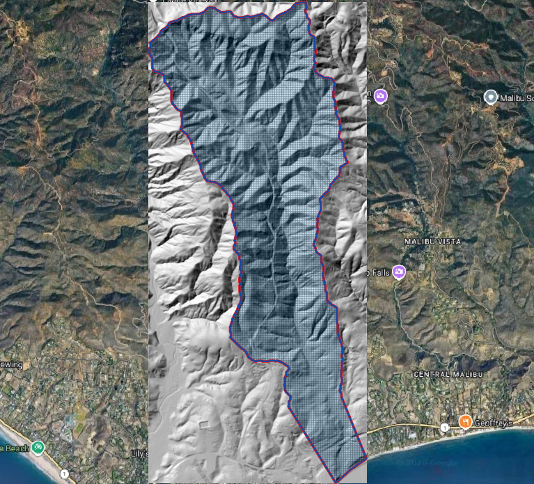
Figure 2. Computational grid and terrain model.
Surface Roughness
Manning’s roughness values were developed using land cover classifications and interpolated to the computational grid.
Spatially varying roughness values were applied to represent:
Natural channels
Desert vegetation
Disturbed areas
Urbanized regions
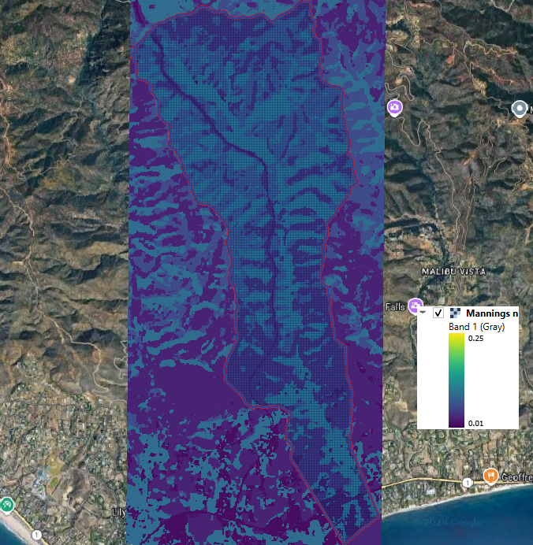
Figure 3. Spatial distribution of Manning’s roughness.
Hydrology
Rainfall
The design storm was selected to represent a short-duration, high-intensity event capable of generating significant runoff and mudflow. A temporal rainfall distribution was developed to represent storm intensification and recession over the event duration. The 10 yr 3-hr design storm rainfall in inches and rainfall distribution curve was defined for the project using the rainfall editor.
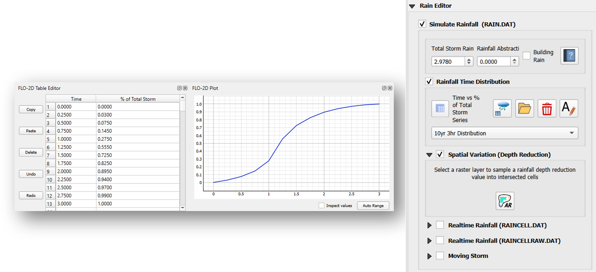
Figure 4. Design storm rainfall distribution.
Infiltration
Infiltration losses were estimated using soil and land use information. Green-Ampt parameters were developed from:
Soil hydraulic properties
Land cover classifications
Surface abstraction characteristics
This process allowed rainfall excess to be converted into runoff while accounting for spatial variability in infiltration parameters. The Green-Ampt method uses Hydraulic Conductivity (xksat), Infiltration Volume (dtheta), Capillary Suction (psif), Initial Abstraction (aa), and Percent Impervious (rtimp) to define transmission losses over a project area. The SSURGO Soil and ESA World Land Cover were used in this example to interpolate Green-Ampt Parameters to the grid.
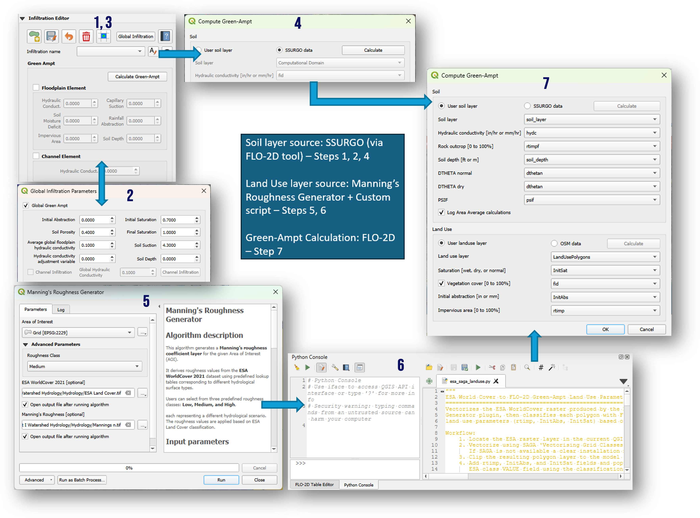
Figure 5. Infiltration parameter development.
Hydrologic Response
A rainfall-runoff simulation was performed to estimate the watershed response to a 10-year 3-hr design storm. The runoff hydrograph was extracted from a cross section located near the watershed outlet at the canyon mouth. The resulting hydrograph represents the timing and volume of flow entering the downstream mudflow routing domain. Short-duration rainfall intensity is a primary factor controlling post-fire debris-flow initiation and watershed response, particularly in steep coastal watersheds where debris flows can be be triggered by relatively frequent storm events. Although this case study uses a 10-year design storm, Staley et al. (2020) found that many post-fire debris flows are triggered by more frequent rainfall events, indicating that damaging debris flows are not limited to rare, extreme storms.
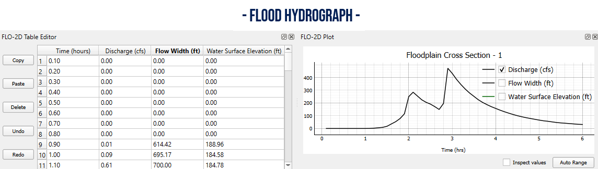
Figure 6. Simulated watershed hydrograph.
Mudflow Volume
An estimated debris-flow volume was obtained from the USGS post-fire debris-flow hazard assessment dataset for the 2018 Woolsey Fire. The dataset was generated using the empirical regression model developed by Gartner et al. (2014), which predicts debris-flow volume from watershed relief, burned area, and short-duration rainfall intensity. The predicted debris-flow volume is expressed as:
where:
\(V\) = potential sediment volume (m³)
\(\ln(V)\) = natural logarithm of the potential sediment volume
\(i15\) = peak 15-minute rainfall intensity (mm/hr)
\(Bmh\) = catchment area burned at moderate or high severity (km²)
\(R\) = watershed relief (m)
The USGS hazard assessment predicts a debris-flow volume of approximately 23,400 m³ or ~19 acre-ft for the study watershed. This value was used to estimate the sediment volume available for entrainment during the FLO-2D mudflow simulation.
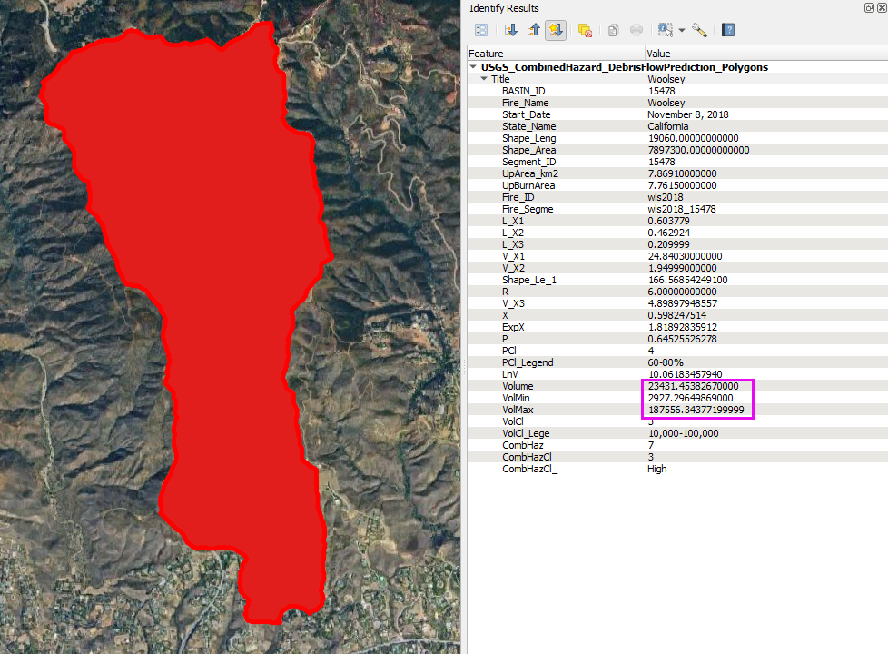
Figure 7. USGS post-fire debris-flow hazard polygons.
USGS post-fire debris-flow hazard polygon for the study watershed. The attribute table includes the intermediate regression variables and the predicted debris-flow volume used in this case study.
Mudflow Hydrograph
The clear-water runoff hydrograph was converted to a mudflow hydrograph by applying a variable volumetric sediment concentration (\(C_v\)) that increased proportionally with discharge. The sediment concentration at each time step was computed as:
where:
\(C_v\) = volumetric sediment concentration
\(C_{v,\max}\) = maximum volumetric sediment concentration
\(Q\) = instantaneous discharge
\(Q_{\max}\) = peak discharge of the clear-water hydrograph
This approach assumes that sediment concentration is greatest at the peak discharge and decreases during the rising and recession limbs of the hydrograph, resulting in a time-varying mudflow hydrograph representative of a post-fire debris-flow event.
A uniform sediment concentration applied over the entire hydrograph produced sediment volumes that exceeded the debris volume predicted by the USGS empirical regression model of Gartner et al. (2014). Therefore, the peak sediment concentration (\(C_{v,\max}\)) was iteratively adjusted while allowing the sediment concentration to vary with discharge until the integrated sediment volume matched the predicted debris yield. For this case study, a peak volumetric sediment concentration of approximately 0.45 produced a modeled sediment volume consistent with the predicted debris yield of approximately 19 acre-ft.
This methodology preserves the temporal characteristics of the modeled runoff hydrograph while constraining the total sediment volume to an independently estimated debris yield, providing a practical engineering approach for developing mudflow inflow hydrographs in the absence of a physically based sediment transport model.
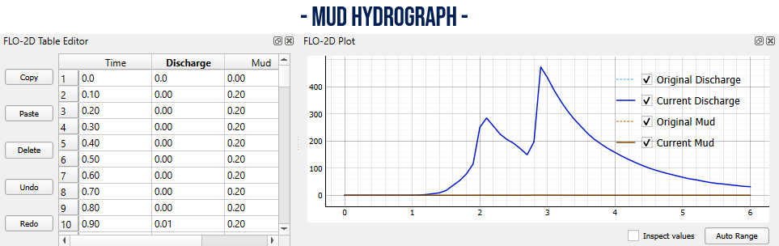
Figure 8. Mudflow hydrograph development.
Mudflow Routing Simulation
The FLO-2D mudflow model was configured to simulate flow conditions.
Model inputs included:
Mudflow hydrograph
Mudflow concentration parameters
Viscosity and yield stress coefficient and exponent parameters
Surface roughness
Terrain elevations
Hydraulic structures
The simulation routed the mudflow downstream of the canyon apex and through the urban zone crossing Highway 1 with the Pacific Ocean as a boundary.

Figure 9. FLO-2D mudflow simulation.
Results
The simulation produced a series of hazard maps that describe the magnitude and extent of the event. It could also be used to determine if an upstream debris basin could mitigate an event.
Maximum Mudflow Depth
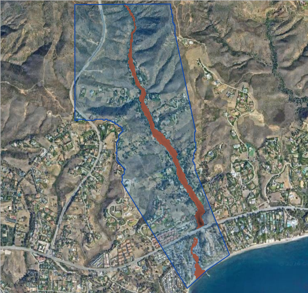
Figure 10. Maximum mudflow depth.
Maximum Velocity
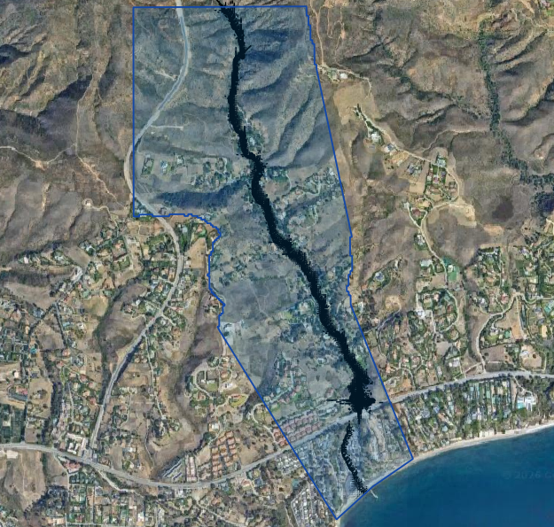
Figure 11. Maximum mudflow velocity.
Maximum Sediment Concentration
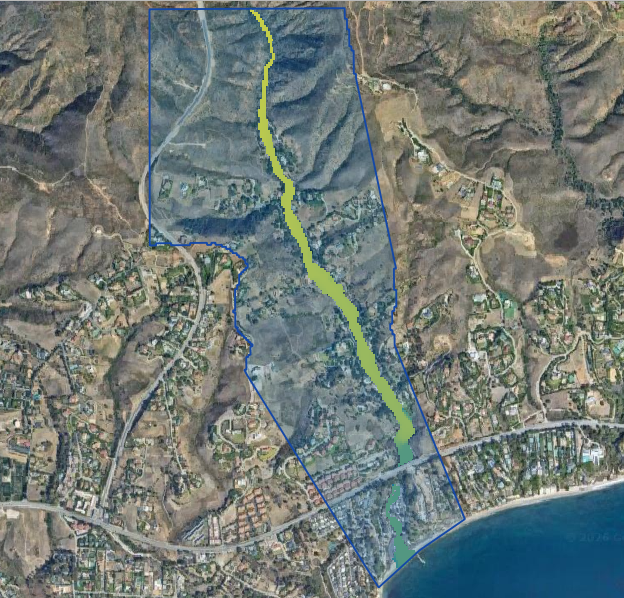
Figure 12. Maximum sediment concentration by volume.
Combined Hazard Assessment
The resulting hazard maps identify areas potentially exposed to:
Deep mudflow inundation
High velocity impacts
Elevated sediment concentrations
Deposition zones in the urban areas
These outputs can be used to support:
Hazard mapping
Infrastructure planning
Emergency response planning
Debris-flow mitigation studies
Land development reviews
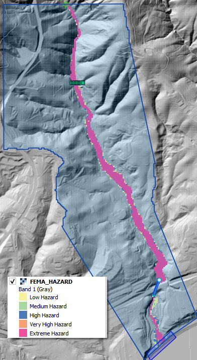
Figure 13. Fema Hazard Zones.
Key Findings
Watershed-scale rainfall runoff can be converted into a defensible mudflow inflow hydrograph.
Spatially distributed infiltration improves runoff estimation.
Mudflow routing is highly sensitive to topography and channel confinement.
Sediment concentration significantly influences downstream hazard extent.
FLO-2D provides a practical workflow for evaluating rainfall-triggered mudflow hazards.
Conclusion
This case study demonstrates a complete end-to-end workflow for simulating rainfall-generated mudflows using FLO-2D. By combining watershed hydrology, infiltration analysis, hydrograph generation, and mudflow routing, engineers can evaluate potential downstream impacts, design mitigation features, and support hazard planning in debris-flow-prone watersheds.
References
Gartner, J.E., Cannon, S.H., and Santi, P.M. (2014). “Empirical Models for Predicting Volumes of Sediment Deposited by Debris Flows and Sediment-Laden Floods in the Transverse Ranges of Southern California,” Engineering Geology, Vol. 176, pp. 45-56. Elsevier. https://doi.org/10.1016/j.enggeo.2014.04.008
O’Brien, J.S. (2020). Simulating Mudflow Guidelines. FLO-2D Software, Inc., Nutrioso AZ. https://documentation.flo-2d.com/Build25/flo-2d_pro/Simulating%20Mudflow%20Guidelines/Simulating%20Mudflow%20Guidelines.html
Staley, D.M., Kean, J.W., and Rengers, F.K., 2020, “The Recurrence Interval of Post-Fire Debris-Flow Generating Rainfall in the Southwestern United States,” Geomorphology, Vol. 370, Article 107392. Elsevier. https://doi.org/10.1016/j.geomorph.2020.107392